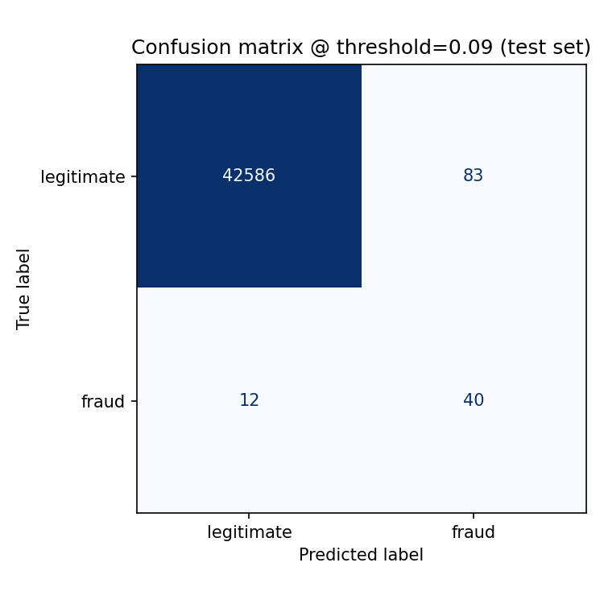
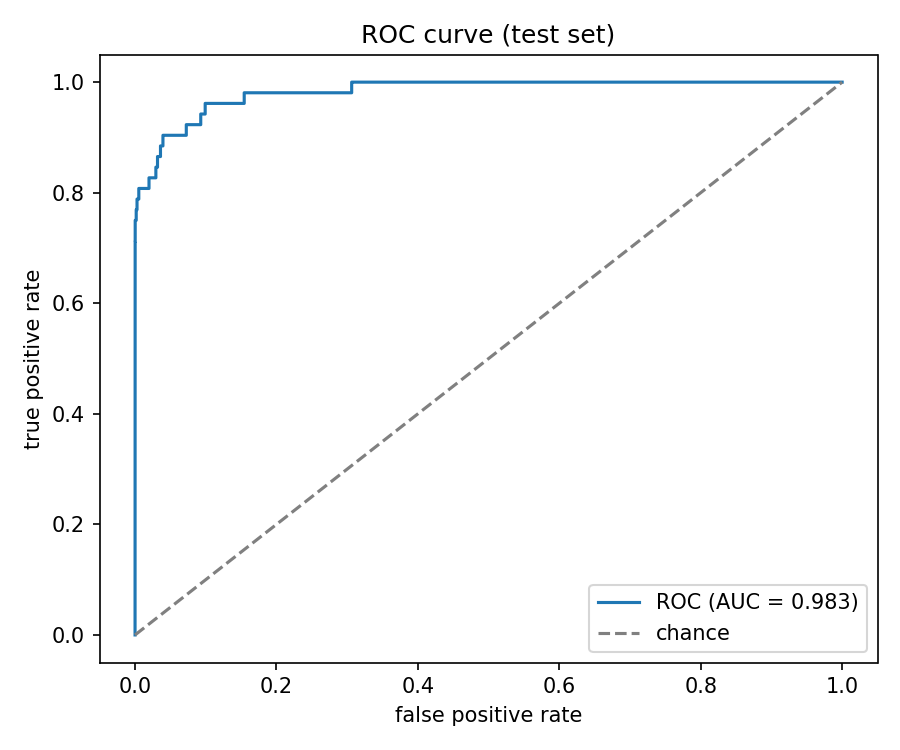
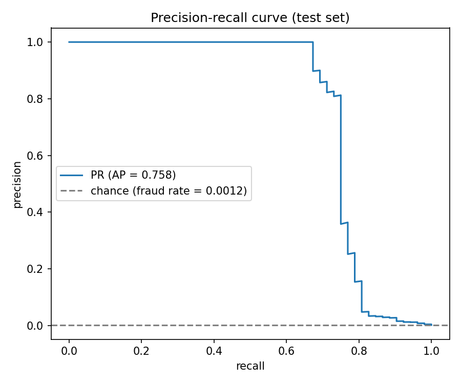
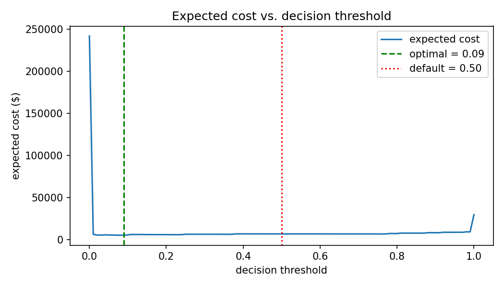
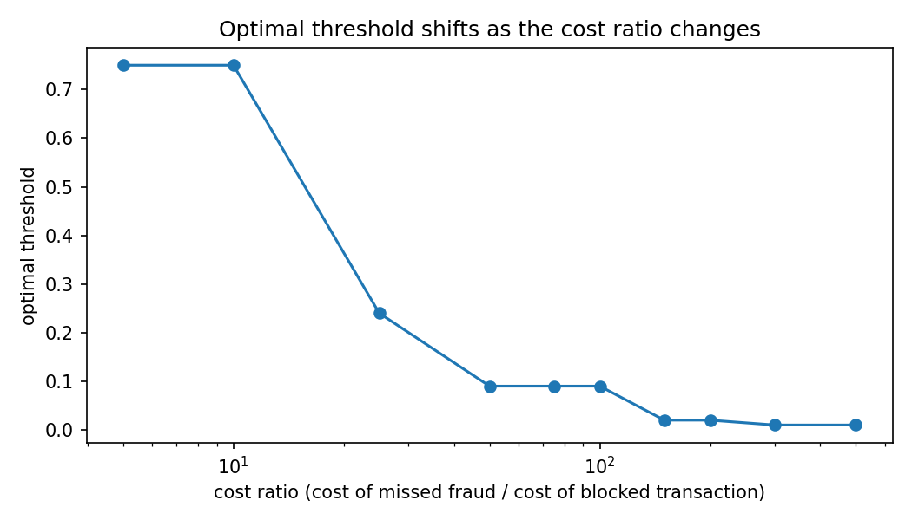
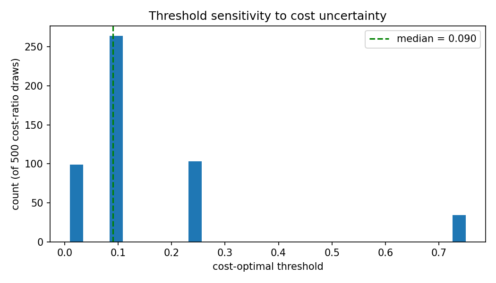
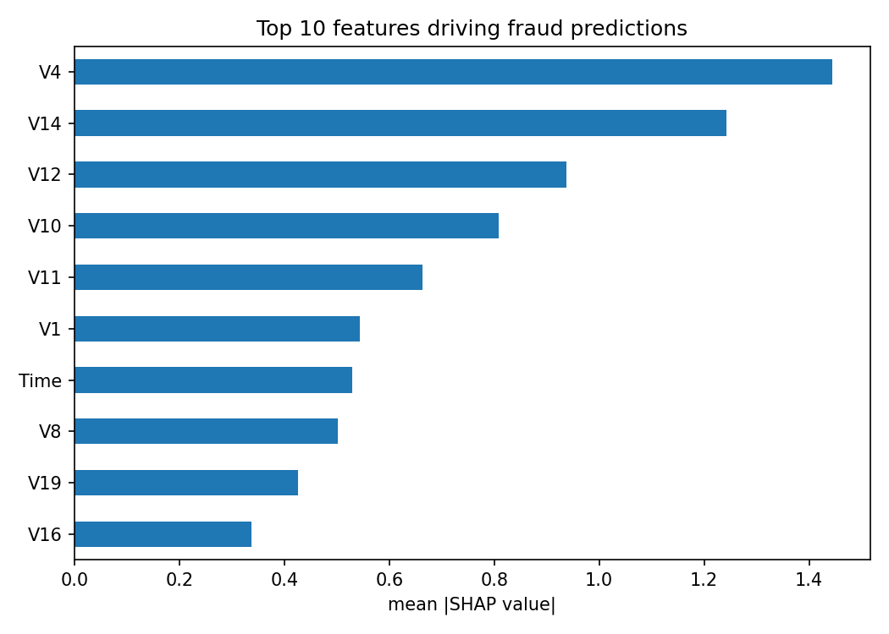
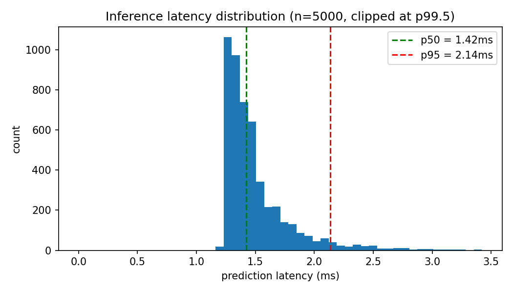

Cost-Sensitive Fraud Detection with Threshold Optimization
How robust is optimizing the fraud decision threshold against a cost function — not just
whether it beats 0.5 on one test split, but across time windows, cost-ratio uncertainty,
and a second, structurally different dataset.
This is deliberately the honest table, not the flattering one — see the verdict boxes below.
How the model detects fraud
Production model (class-weighted XGBoost @ 0.09), real untouched test set — 42,721
transactions, 52 fraud (0.17%). Accuracy alone is meaningless here: predicting "not fraud"
every time scores 99.8%.

40 of 52 fraud caught, 83 false alarms out of 42,669 legitimate

ROC-AUC 0.983

PR-AUC 0.758 — the metric that actually matters at this imbalance
ROC-AUC looks uniformly excellent even for a mediocre model here, because true negatives are
so abundant they flood the false-positive-rate axis. PR-AUC is far more sensitive to what
happens at realistic operating thresholds — notice its chance line sits at 0.0012, essentially
on the floor.
Cost-sensitive threshold optimization
$500 per missed fraud, $5 per blocked legitimate transaction — illustrative, not sourced.
Threshold selected on validation, cost reported on the untouched test set.

Default (0.50): $6,575 · optimized (0.09): $6,415

Optimal threshold moves from 0.87 to 0.01 as the cost ratio sweeps 1→500
Is any of it robust?

500 draws of cost_fn~U(100,1000), cost_fp~U(1,20) — median matches the point estimate, range is [0.01, 0.75]
cost reduction 2.4%, 95% CI [−9.3%, 18.7%] — crosses zero
Cost-ratio uncertainty (500 draws)
median 0.09 matches the point estimate, but range is [0.01, 0.75]
Cost-sensitive threshold optimization has a positive expected effect here, but it is not a
reliably-winning intervention on a 492-fraud-row dataset. That's the honest read, not a
hedge.
What drives the prediction

V4, V14, V12 — the strongest drivers (SHAP), consistent with published analyses of this dataset
Does any of this generalize? — external validation on Sparkov
Same protocol and costs, applied to a structurally different dataset (881,739 rows, 4,989
fraud, real merchant/category/geolocation fields instead of anonymized PCA components).
Primary
Sparkov
Baseline PR-AUC
0.757
0.969 (with per-card velocity feature)
Class weighting
helps marginally
hurts (0.909 → 0.882)
Threshold optimization
+2.4% cost reduction
−1.8% (worse)
Walk-forward beats default
2 / 4 folds
1 / 4 folds
Neither primary-dataset conclusion replicates — and the disagreement gets stronger
once a real per-card feature is added. Likely reason: Sparkov's engineered features already
separate classes almost perfectly, leaving little room for cost-sensitive machinery to help.
That's not a failure of the method; it's evidence the method's value is concentrated where the
raw signal is weak.
Inference latency

5,000 real served predictions — p50 1.42ms, p95 2.14ms